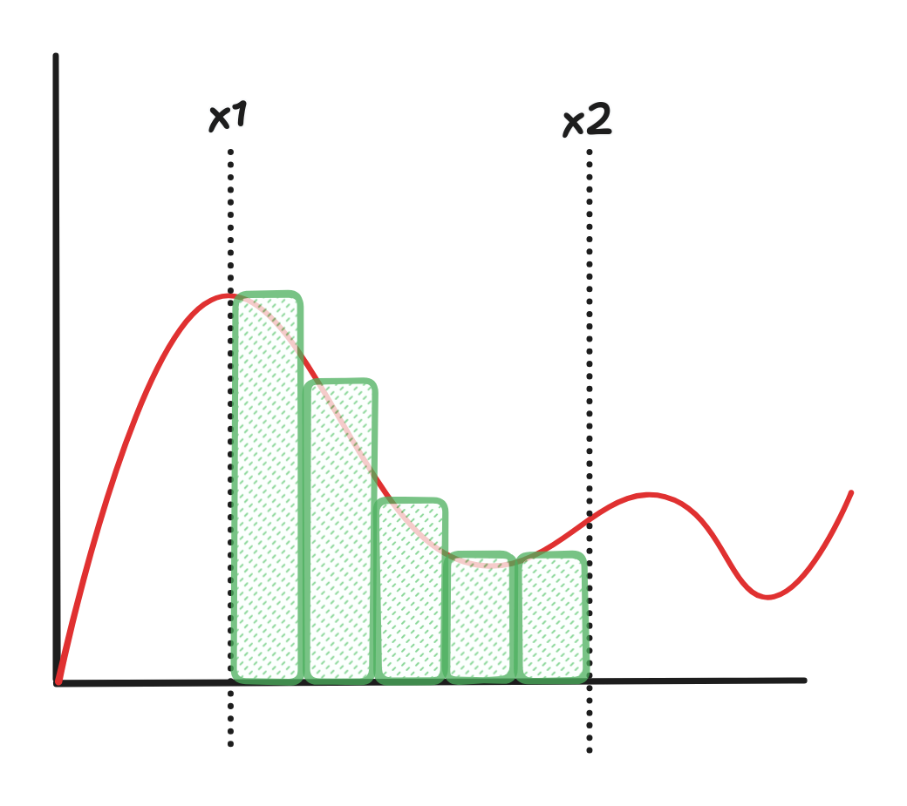

Teoría 306
Composición Iterativa V
Generación de números pseudo-aleatorios
El determinismo en la informática
- Como se dijo en la primera sesión: los ordenadores son deterministas.
- Los programas que escribimos siempre producen el mismo resultado para una misma entrada.
- Eso tiene sus ventajas:
- Nos permite predecir el comportamiento de los programas.
- Nos permite reproducir errores.
- Sin embargo, a veces necesitamos aleatoriedad.
- Juegos, simulaciones, etc.
Números pseudo-aleatorios
- La forma de obtener “aleatoriedad” en un ordenador determinista es mediante los algortimos de generación de números pseudo-aleatorios.
- Estos algoritmos generan una secuencia de números que estadísticamente se comportan como si fueran aleatorios.
- El algoritmo genera un nuevo número a partir del anterior: \(x_n = f(x_{n-1})\).
- Necesita un valor \(x_0\) para empezar.
- Este valor \(x_0\) inicial se denomina semilla.
- Si utilizamos la misma semilla, obtendremos la misma secuencia.
- Deberemos, entonces, dar con la forma de obtener esa primera semilla de forma segura.
Orígenes de semillas
- Elegir la semilla para un programa pseudo-aleatorio puede ser un labor crítica de seguridad.
- Si se compromete la secuencia de números, se compromete la seguridad del sistema.
- Existen diversas fuentes que podemos usar para obtener una semilla (de menos segura, a más segura):
- Pedir al usuario que introduzca un número.
- Leer la hora del sistema.
- Leer la temperatura del procesador.
- Leer la posición del ratón.
- Leer la entrada del usuario.
- Utilizar Hardware especializado.
- Lavarand es un muro de lámparas de lava construido por Cloudflare para generar números aleatorios.
- Las lámparas de lava se iluminan y se apagan de forma aleatoria.
- Se captura el estado de las lámparas y se convierte en un número aleatorio.
- Se actualiza cada 60 segundos.

Números pseudo-aleatorios a mano
- Existen algoritmos sencillos que podemos usar para generar números pseudo-aleatorios.
- Si bien es cierto que no son seguros, pueden ser útiles para fines didácticos.
- A modo de ejemplo, vamos a ver cómo funciona el algoritmo de congruencia lineal.
- \(x_{n+1} = (a \cdot x_n + c) \mod m\)
- \(m>0\), \(0 \leq a < m\), \(0 \leq c < m\), \(0 \leq x_0 < m\)
Números pseudo-aleatorios en Python
- En lugar de implementar vuestra propia función de generación de números pseudo-aleatorios, podéis y deberéis utilizar librerías sofisticadas y seguras.
- En Python, la librería
randomproporciona funciones para generar números pseudo-aleatorios.random.seed()establece la semilla.random.randint(a, b)genera un número entero aleatorio entreayb.random.random()genera un número real aleatorio entre 0 y 1.
Ejemplo: Ability Check
Escribe un programa en Python que simule un chequeo de habilidad: - El programa debe lanzar un dado de D20 (20 caras). - Si el resultado es mayor o igual que el umbral de habilidad (que el usuario introduce), el chequeo es exitoso.
Cálculo numérico
Cálculo numérico
- Uno de los primeros usos de la computación fue el cálculo numérico.
- El cálculo numérico consiste en aproximar soluciones a problemas matemáticos.
- Los bucles y los números pseudo-aleatorios son dos herramientas muy útiles para realizar cálculos numéricos.
Ejercicio: Aproximación de una integral por el método del punto medio
Escribe un programa Python que calcule la integral de la función \(f(x) = x^3\) en el intervalo [0, 1] mediante la regla del punto medio.
Analíticamente:
\[ \int_{0}^{1} x^3 \, dx = \left.\frac{x^4}{4}\right|_0^1 = \frac{1^4}{4} - \frac{0^4}{4} = \frac{1}{4} \]
Numéricamente
- Podemos aproximar numéricamente la integral:
- Dividiendo el intervalo en subintervalos pequeños.
- Calculando el área de cada subintervalo.

Solución:
inicio = 0
fin = 1
intervalos = 1000
paso = (fin - inicio) / intervalos
integral = 0 # acumulador
x = inicio
while x < fin:
y = x ** 3 # f(x) = x^3
area = paso * y
integral += area
x += paso
print(integral)¿Por qué no podemos usar range(a, b, step)?
- La función
rangesolo acepta números enteros. - ¿Se te ocurre alguna forma de solucionarlo?
Ejercicio: Aproximación de coseno por serie de Maclaurin
Escribe un programa Python que calcule una aproximación del coseno de un número real x mediante la serie de Maclaurin:
\[ \cos(x) = \sum_{n=0}^{\infty} \frac{(-1)^n}{(2n)!}x^{2n} = 1 - \frac{x^2}{2!} + \frac{x^4}{4!} - \frac{x^6}{6!} + \cdots \]
El programa debe solicitar el ángulo en radianes x y el número de términos n a sumar.
Solución:
Ejercicio: Aproximación de pi por método de Monte Carlo
Escribe un programa Python que calcule una aproximación de \(\pi\) mediante el método de Monte Carlo (simulación y conteo).
- Sabemos que:
- Para un círculo de radio 1: \(area_{círculo} = \pi\).
- Para un cuadrado de lado 2: \(area_{cuadrado} = 4\).
- \(\frac{area_{círculo}}{area_{cuadrado}} = \frac{\pi}{4}\).
- \(\pi = 4 \times \frac{area_{círculo}}{area_{cuadrado}}\).
- Simulamos que lanzamos dardos aleatoriamente en el cuadrado
- Generamos puntos
(x, y)aleatorios en el cuadrado. - Contamos cuantos caen dentro del círculo: \(x^2 + y^2 \leq 1\).
- La probabilidad de que un dardo caiga dentro del círculo es \(\frac{\pi}{4}\).
- Un
- \(\pi \approx 4 \times \frac{dardos_{dentro}}{dardos_{total}}\).
- Generamos puntos
Solución:

Fundamentos de Informática